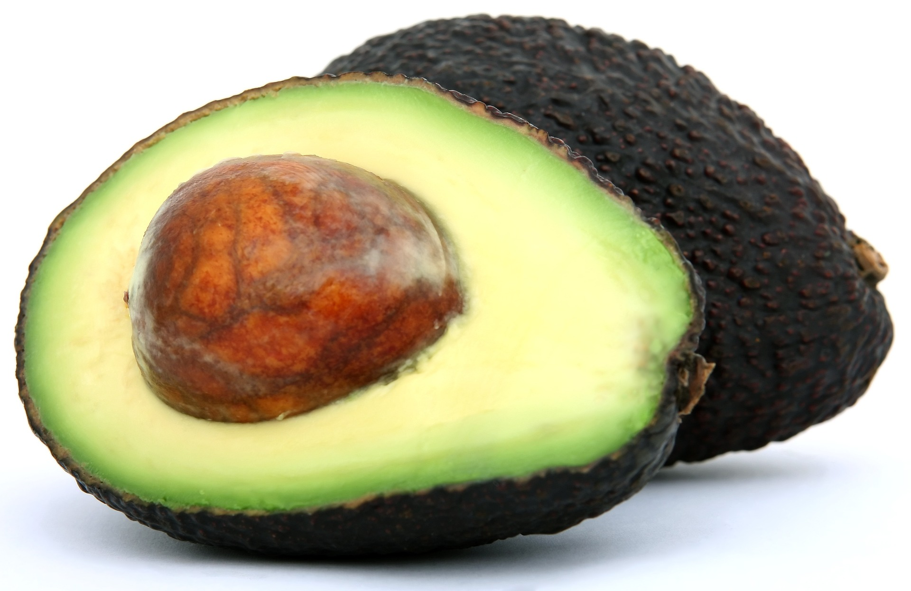
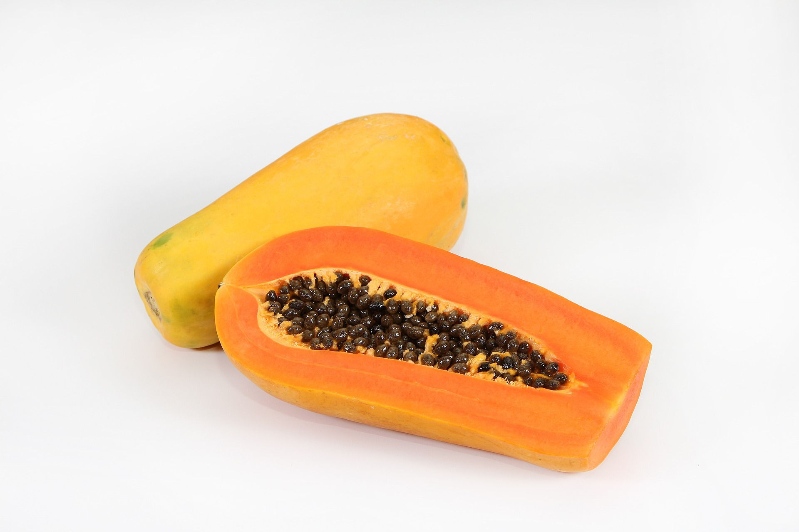
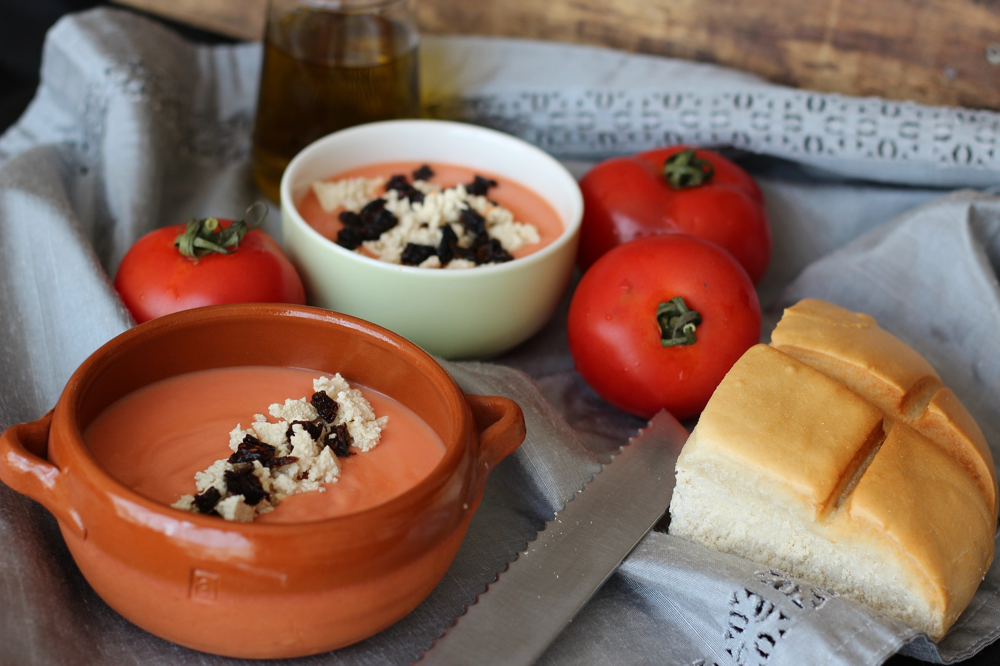
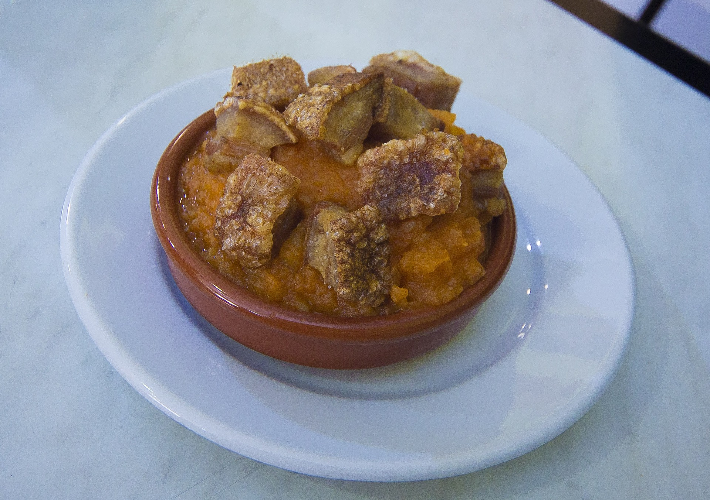

AQUI VA LA PORTADAAAAAAAAAAAAA
AQUI VA LA PORTADAAAAAAAAAAAAA
AQUI VA LA PORTADAAAAAAAAAAAAA
AQUI VA LA PORTADAAAAAAAAAAAAA
AQUI VA LA PORTADAAAAAAAAAAAAA
AQUI VA LA PORTADAAAAAAAAAAAAA
AQUI VA LA PORTADAAAAAAAAAAAAA
AQUI VA LA PORTADAAAAAAAAAAAAA
AQUI VA LA PORTADAAAAAAAAAAAAA
AQUI VA LA PORTADAAAAAAAAAAAAA
AQUI VA LA PORTADAAAAAAAAAAAAA
AQUI VA LA PORTADAAAAAAAAAAAAA
AGUACATE
Persea americana, llamado popularmente aguacate, palto (Argentina, Bolivia, Chile, Perú y Uruguay), curo (Andes colombianos y venezolanos), aguacatero (República Dominicana, Puerto Rico y Venezuela) o avocado (Filipinas), es una especie arbórea del género Persea perteneciente a la familia Lauraceae, cuyo fruto, el aguacate, palta o avocado, es una baya comestible. Es una especie originaria de Mesoamérica, específicamente de las partes altas del centro y este de México, Guatemala y El Salvador. Las evidencias más antiguas de su uso se encontraron en Coaxcatlán (México) y datan de hace unos 10.000 años. Actualmente, la especie se cultiva en lugares con climas tropical y mediterráneo en todo el mundo. La gran demanda de aguacate ha hecho que sus plantaciones transformen grandes extensiones de ecosistemas nativos.
PAPAYA
Carica papaya es la papaya herbácea del género Carica en la familia Caricaceae. Su fruto se conoce comúnmente como papaya, papayón, fruta bomba, olocotón, papayo, mamón, lechosa o lechoza.[cita requerida] Carica del griego “karike”, nombre de una higuera. Papaya, deriva del maya “páapay-ya” que significa zapote jaspeado. Pertenece a la familia de las Caricaceae. La planta de papaya es una especie arborescente perennifolia.2
SALMOREJO
Cuando visité Córdoba, haciendo un recorrido por su gastronomía, tuve el honor de ser nombrado embajador de la Cofradía del Salmorejo y no podía dejar pasar ese honor sin contaros cómo se hace la receta del salmorejo cordobés tradicional, una sopa fría como la mazamorra con la que siempre quedo bien contento, especialmente en los días calurosos de primavera y verano, y que es una de las mejores recetas de la cocina andaluza.
TORREZNO
Un torrezno (de torrar, del lat. torrēre, tostar, acercar algo al fuego hasta que toma color) es una tira de tocino, siempre con su piel, frita o salteada en sartén o tostada en una parrilla. Habitualmente los torreznos quedan crujientes y dorados por el lado de la piel. Suelen comerse como tapa o como guarnición.1 No es cierto, como se afirma en diversas publicaciones234 que los torreznos tengan la categoría de patrimonio gastronómico de la humanidad por la UNESCO. Ni siquiera existe tal categoría, sino la de Bien Inmaterial. La UNESCO no tiene dicha consideración para ningún alimento en concreto, sino para tradiciones culturales gastronómicas completas, como la dieta mediterránea, como se puede comprobar en la lista de Bienes Inmateriales de España de la propia UNESCO.
SOBRE NOSOTROS
CAROLINA
JEFA SUPREMA
BORJA
JEFE BOBO